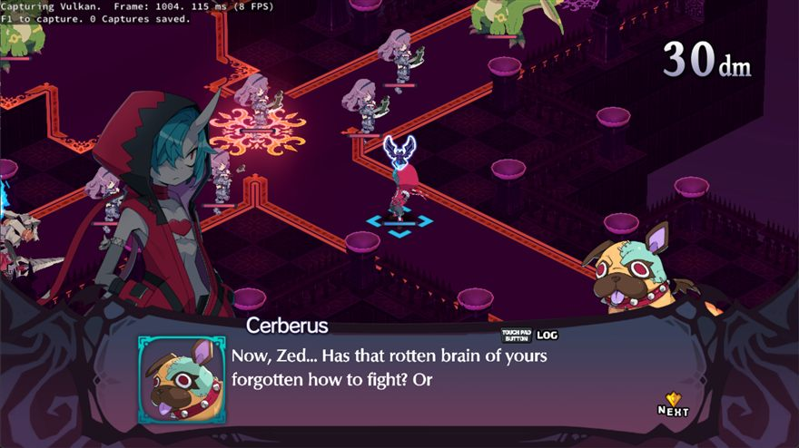
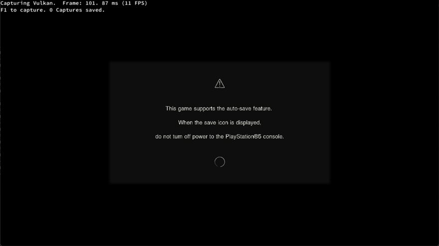
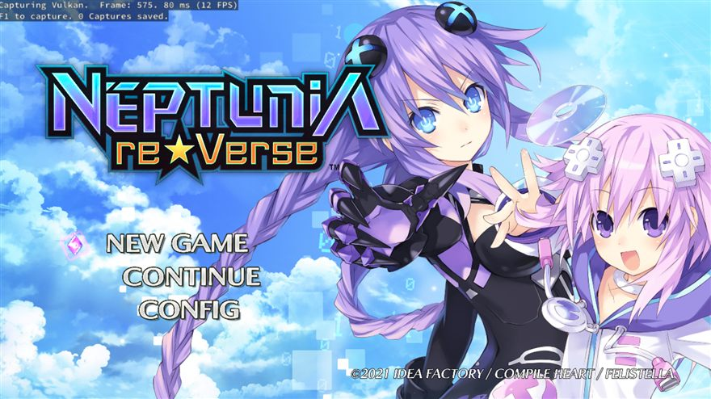

KytyPS5 takes a program built for a games console — with its own operating system, its own graphics API, and its own idea of what memory looks like — and persuades it to run on a PC. These five documents explain how, from first principles to SPIR-V shader recompilation.
Nothing here plays on its own — every tool takes your input and computes a real answer. Type an address and watch it decompose. Click bytes and watch pages fault. Run a shader across 64 lanes. Build a command buffer and find out why your draw produced nothing.
Every hard idea in the emulator, shown moving. How guest code runs with no CPU emulator, how the address space is carved up, how a file becomes a running program, which thread does what, and how command packets become pixels. Each animation plays on its own and steps by hand.
The full treatment, assuming no prior knowledge of emulation. Part I teaches the background — calling conventions, virtual memory, ELF linking, how a GPU actually draws — before any emulator code appears. Then every layer, with real source throughout.
A condensed tour for readers who already have the background. Same subject, much less scaffolding — useful as a refresher, or as orientation before diving into one subsystem.
A workbook, not a document. Seven levels and 32 tickable tasks against the real repository, ordered so each level ends with a capability you did not have before. Progress saves in your browser.



Written by reading the KytyPS5 source tree at v0.2.2; file and line references point at that revision and will drift. These are unofficial — a reading of the source, not maintainer-authored documentation. Where a document and the code disagree, the code is right.
KytyPS5 is GPL-2.0-only and based on InoriRus/Kyty (MIT). Screenshots are from the KytyPS5 repository. Not affiliated with Sony Interactive Entertainment.